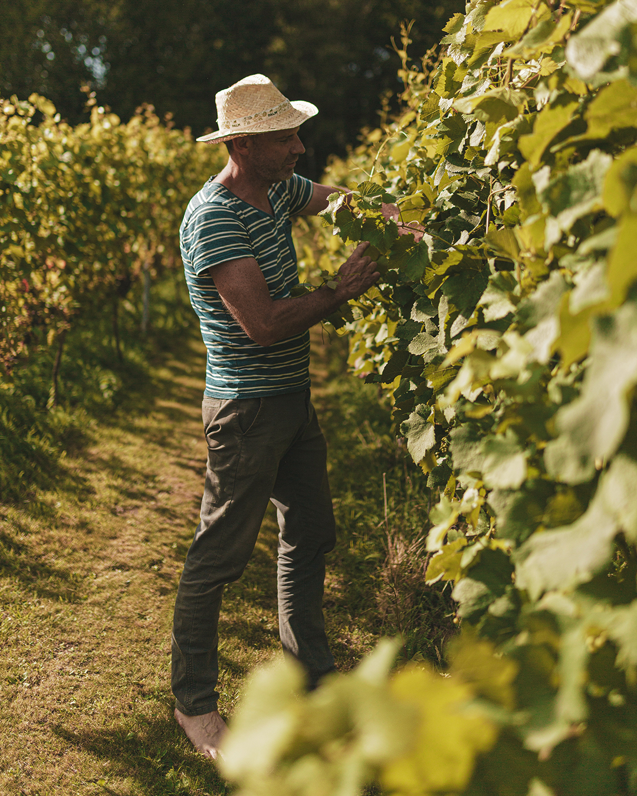
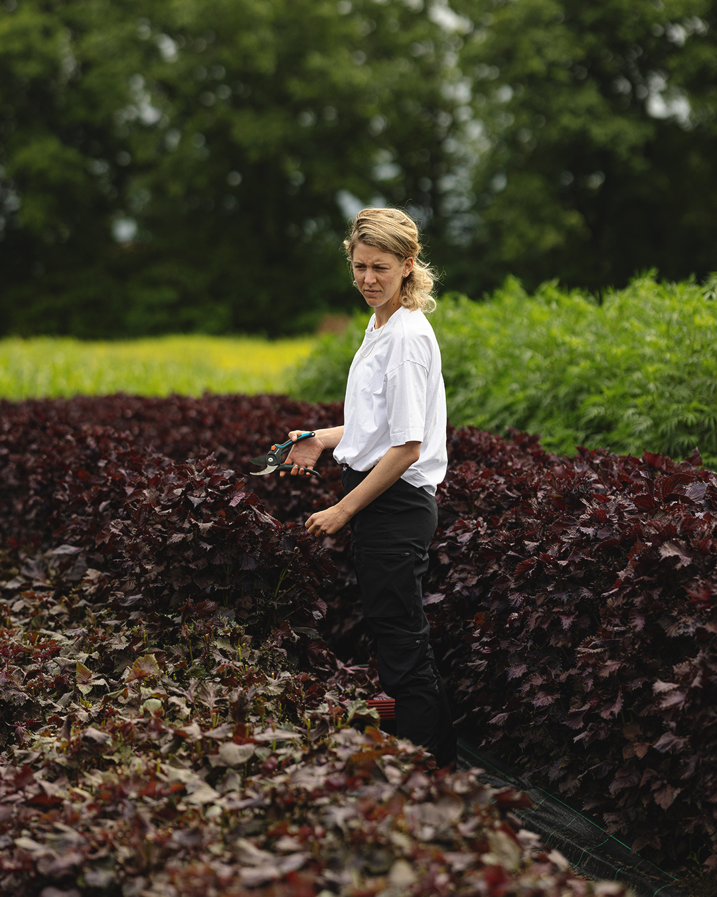
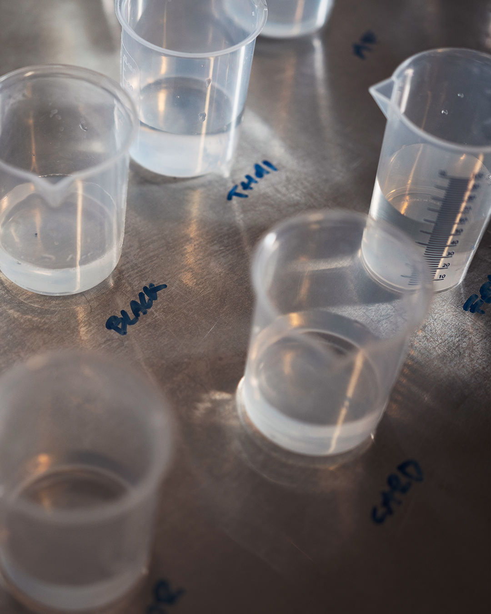
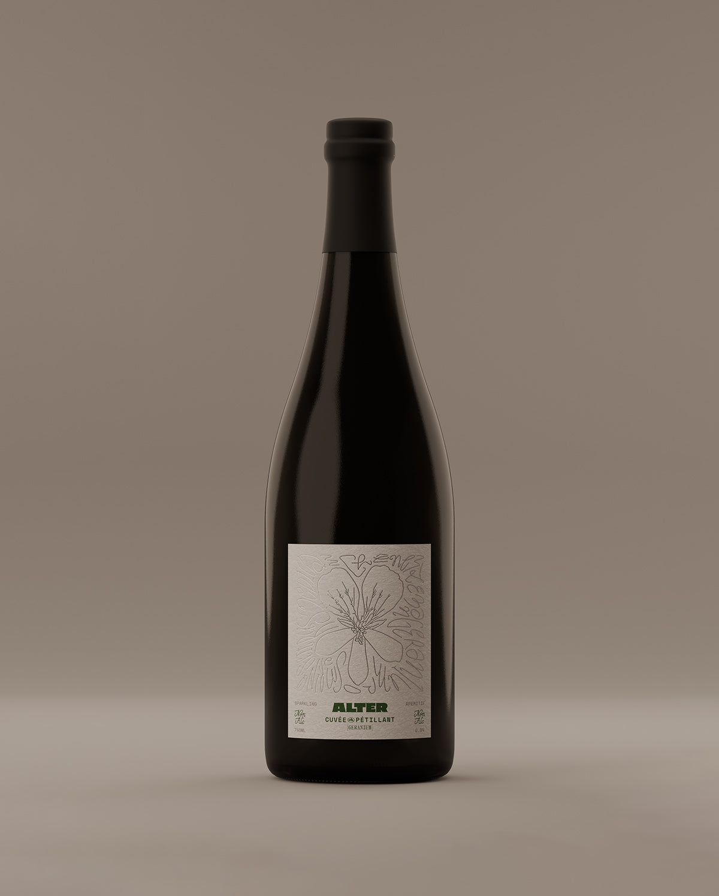
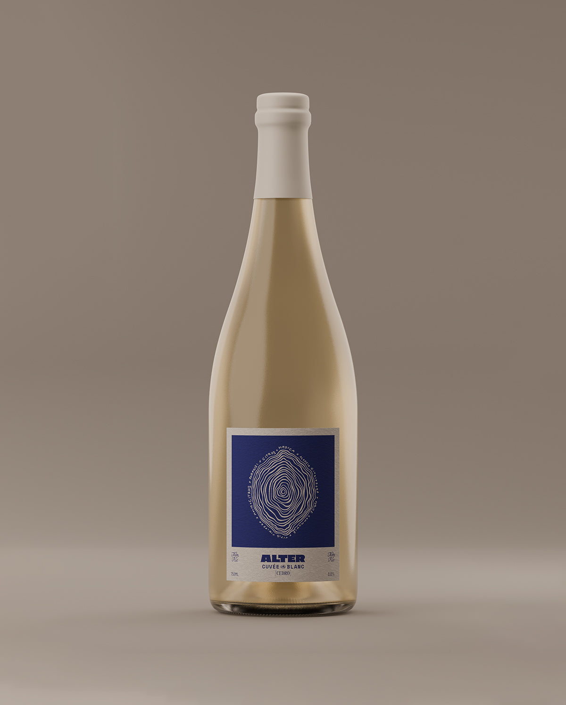
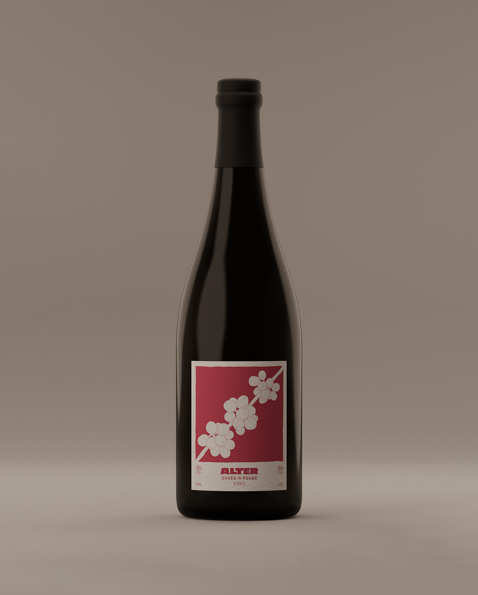
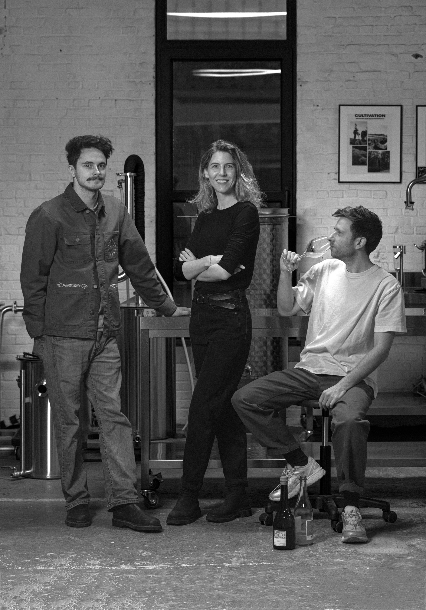

ALTER Cuvée
An alternative for your wine moments
01
Centuries of terroir, varietals, harvests and savoir-faire. A living culture of winegrowers who read the soil like a language. We have no intention of replacing it.
Wine consumption has been in structural decline for more than a decade. Younger generations are turning away from alcohol entirely — not for one night, but for good.
This isn't a hype cycle. It's a generational re-write of how and when we drink. Zero-proof is becoming the default choice at the aperitif, the table and the bar.
Est. drop in global wine consumption,
2007 → 2024 (OIV / industry data)
Gen-Z adults in Europe describe themselves
as non- or low-drinkers.
Across Bordeaux, Languedoc, Rioja and beyond, vineyards are being pulled up. Growers are paid to destroy surplus stock. Nearly half of some regional harvests cannot find a buyer. Beautiful grapes — no longer drunk as wine.
Most non-alcoholic wine on the shelf today is not built. It is dismantled, then re-painted.
Low-grade wine is produced at scale — the base is already compromised before processing begins.
Industrial vacuum distillation or reverse osmosis strips out the alcohol — and with it the backbone of esters, flavonoids, and aromatics.
The flavourless liquid is re-built with artificial flavourings, additives and preservatives. A ghost of a wine.
The greatest respect one can give to wine is not to pretend to be it. De-alcoholization is the most disrespectful, betrayed interpretation of a non-alcoholic alternative.
Old school meets new school. Two real stories in one bottle.
ALTER works directly with the winegrower. We ask them to harvest specific varietals earlier — verjus, the unripe grape — a juice that still holds the full flavour signature of its variety, with less sugar and a beautiful sweet-sour balance.
On that viticultural platform we build a second story: our own distillates from self-cultivated herbs, flowers and botanicals. A winemaker's nose, palate and finish — composed, not imitated.

Early-harvest grapes, picked with our winegrowers before full ripeness. This juice is the foundation — it carries the natural sour, sweet and bitter balance of the cuvée, the platform we build flavour, complexity and depth on.

Herbs, flowers and botanicals from our own cultivation, distilled in-house. These non-alcoholic distillates define the natural flavour palate — shining on the terroir-grape platform of act 01 to generate an adult depth of flavour.

Here it comes together. We blend the two acts the way a winemaker assembles cépages — layering so the cuvée opens in three distinct phases, each with its own character: nose, palate, length.
ALTER doesn't chase the flavour of wine — that is dealcoholization's mistake. ALTER builds the ritual of wine: the three-act tasting arc every sommelier and every drinker recognises.
We speak the same language as sommeliers and winemakers — primary, secondary and tertiary aromas, unfolding from nose to palate to finish. We just taste different. Pour, swirl, nose, sip, finish. Discuss. Aromas unfold, shift, linger.

A sparkling cuvée. Fine bead, lifted florals of geranium, a dry aperitif length. Built for the first pour of the evening.

An explosion of fresh citrus and white stone fruit. Bright acidity, layered botanical mid-palate, a clean mineral finish.

Depth and grip. Dark fruit, spiced bark, cedar and a tannic botanical backbone. For the table, for the main course.
We are working toward a transformation in which 50% of the wine assortment will become non-alcoholic.Eldrid Vindevogel Head of Procurement CRU · Colruyt Group

ALTER is raising to scale production capacity, accelerate on-trade and curated retail, and deepen our partnerships with winegrowers across Europe. Join us in defining the zero-proof premium standard.